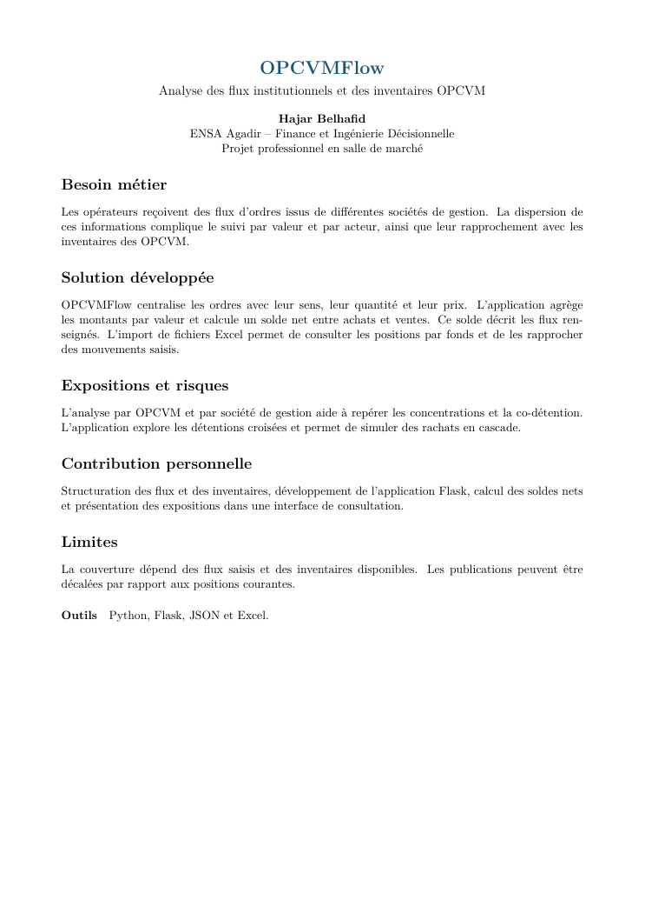

Projet professionnel
OPCVMFlow
Une application Flask pour centraliser les ordres institutionnels, rapprocher achats et ventes et analyser les inventaires OPCVM.
Présentation
La fiche présente le projet et ses principales fonctionnalités.
Fiche projet

Lire la fiche PDF ↗